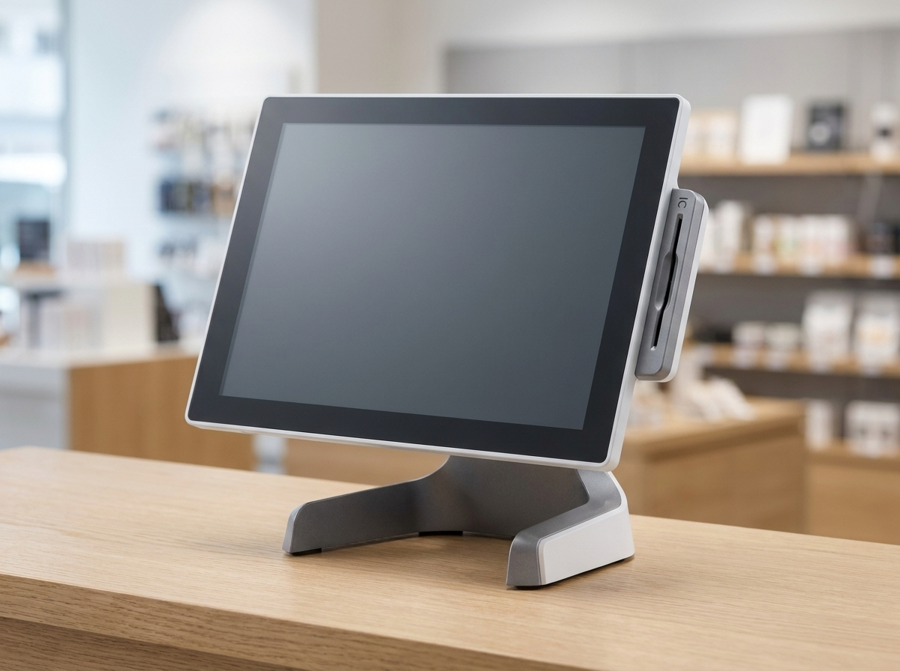

사업자등록증, 홈택스로 신청하는 순서 한 번에 정리 (예비 사장님용)
사업자등록증은 관할 세무서에 직접 가지 않아도 국세청 홈택스(hometax.go.kr)에서 온라인으로 신청할 수 있습니다. 준비물만 갖춰 두면 신청 자체는 길지 않고, 처리되면 발급까지 이어집니다. 이 글은 "언제 등록해야 하는지 → 무엇을 준비하는지 → 홈택스에서 어떤 순서로 누르는지 → 발급 후 무엇을 하는지"를 처음 창업하는 사장님 눈높이로 순서대로 정리했습니다.
한 가지 먼저 짚고 갑니다. 과세유형(일반/간이) 판정 기준, 업종별 인허가·등록 요건, 정확한 필요서류는 상황마다 다르고 제도도 바뀝니다. 이 글은 큰 흐름과 개념을 잡는 용도이며, 정확한 과세유형·업종별 요건·필요서류는 국세청 홈택스(hometax.go.kr)와 관할 세무서에서 반드시 확인하시기 바랍니다.
사업자등록, 언제 해야 하나요?
사업을 시작하면 사업자등록은 "가게 오픈하고 여유 될 때"가 아니라 사업 개시 시점을 기준으로 챙겨야 하는 절차입니다. 세금계산서 발행, 카드 매출 정산, 배달·주문 플랫폼 입점, 그리고 카드 단말기 가맹까지 대부분 사업자등록증(사업자등록번호)이 있어야 진행됩니다.
그래서 실무에서는 인테리어·집기 준비와 함께 사업자등록을 미리 신청해 두는 경우가 많습니다. 다만 정확한 등록 기한과 시점 기준은 국세청 안내를 따르는 것이 안전하므로, 개업 예정일이 잡혔다면 홈택스나 관할 세무서에서 한 번 확인하고 진행하세요.
신청 전 준비물 체크리스트
온라인 신청 전에 아래 항목을 미리 준비해 두면 중간에 막히지 않습니다. 업종에 따라 추가 서류(인허가·등록 관련)가 필요할 수 있으니, 내 업종에 무엇이 필요한지는 사전에 확인하는 것이 좋습니다.
| 준비물 | 내용 | 비고 |
|---|---|---|
| 본인 인증수단 | 공동인증서·금융인증서·간편인증 등 | 홈택스 로그인·전자신청용 |
| 임대차계약서 | 사업장 주소 확인용 | 사업장이 있는 경우 |
| 업종 정보 | 어떤 업태·종목으로 할지 | 미리 정해두면 입력이 빠름 |
| 인허가·등록 서류 | 업종별로 필요할 수 있음 | 해당 업종만, 사전 확인 |
| 사업 개시(예정) 정보 | 개업일 등 | 신청서 작성 시 입력 |
위 표는 일반적인 흐름을 정리한 것으로, 업종·사업 형태에 따라 필요 서류가 달라집니다. 최종 목록은 홈택스(hometax.go.kr) 또는 관할 세무서 확인을 기준으로 하세요.

홈택스 온라인 신청, 이 순서로 진행됩니다
홈택스에서의 개인사업자 등록 신청은 대체로 다음 흐름을 따릅니다. 화면 구성과 메뉴 명칭은 개편에 따라 달라질 수 있으니, 실제 화면의 안내 문구를 함께 확인하며 진행하세요.
- 국세청 홈택스(hometax.go.kr) 접속 후 로그인(인증수단 준비)
- 사업자등록 신청 메뉴로 이동(개인사업자 신청 선택)
- 인적사항·사업장 주소 입력
- 업태·종목(업종) 선택 및 입력
- 임대차 등 사업장 관련 정보 입력, 필요 서류 첨부
- 과세유형 등 관련 항목 확인·선택
- 작성 내용 검토 후 신청서 제출
- 접수·처리 후 사업자등록증 발급 확인(홈택스에서 발급본 확인·출력 가능)
입력 중 헷갈리는 항목이 나오면 임의로 진행하기보다, 홈택스 도움말이나 관할 세무서 문의로 확인한 뒤 넘어가는 편이 나중에 정정하는 것보다 수월합니다.
일반과세 vs 간이과세, 개념만 잡고 가기
개인사업자는 부가가치세 과세유형에 따라 크게 일반과세와 간이과세로 나뉩니다. 두 유형은 세금 계산·신고 방식 등에서 차이가 있는데, 아래는 개념 비교입니다. 어떤 유형에 해당하는지, 특정 업종이 간이과세에서 배제되는지 등 구체적인 판정 기준과 금액은 제도에 따라 정해지므로 여기서 단정하지 않습니다.
| 구분 | 일반과세 | 간이과세 |
|---|---|---|
| 성격 | 일반적인 부가세 과세 방식 | 소규모 사업자 대상의 간이 방식 |
| 신고·계산 | 매출·매입 기준 방식 | 간이 방식(차이 있음) |
| 적용 여부 | 요건·업종 등에 따라 결정 | 요건·업종 등에 따라 결정, 배제업종 존재 |
| 확인처 | 홈택스·관할 세무서 | 홈택스·관할 세무서 |
정리하면, 유형 선택 자체보다 "내 사업이 어떤 유형에 해당하는지"를 정확히 확인하는 것이 먼저입니다. 정확한 과세유형·업종별 요건은 국세청 홈택스(hometax.go.kr)·관할 세무서에서 반드시 확인하세요.
사업자등록증 발급 후, 바로 할 일
등록증이 나왔다면 매장 운영을 위한 준비로 이어집니다. 대표적으로 다음을 챙깁니다.
- 사업용 계좌 준비: 사업 관련 입출금을 개인 자금과 분리해 관리하면 정산·회계가 깔끔해집니다.
- 카드 단말기 가맹 및 결제 환경 구성: 카드 결제를 받으려면 단말기 가맹 절차가 필요하고, 매장 형태에 맞게 포스·주문·결제 구성을 잡아야 합니다.
- 매장 운영 도구 세팅: 포스, 테이블오더/키오스크, 간편결제 등 매장에 맞는 구성 결정.
바로 이 "카드 단말기 가맹·포스 세팅" 단계에서 누리네트웍스가 함께합니다. 누리네트웍스는 사업자등록 대행을 하지는 않지만, 등록을 마친 사장님이 결제·포스 환경을 갖추는 단계에서 매장에 맞는 구성을 상담해 드립니다. 수도권 직접 설치 기반으로 14년간 3만여 매장과 함께해 온 경험, 연매출 70억 규모의 운영, 200개 이상 도입 레퍼런스를 바탕으로 포스·카드단말기·키오스크·간편결제 구성을 안내합니다.
자주 묻는 질문(FAQ)
Q. 세무서에 꼭 방문해야 하나요?
홈택스(hometax.go.kr) 온라인 신청이 가능합니다. 다만 업종·상황에 따라 확인이 필요할 수 있으니, 애매한 부분은 관할 세무서에 문의해 진행하세요.
Q. 일반과세와 간이과세 중 뭘 골라야 하나요?
유형은 요건·업종 등에 따라 결정되는 부분이 있어 임의로 단정하기 어렵습니다. 내 사업의 정확한 과세유형은 국세청 홈택스·관할 세무서에서 확인하는 것이 정확합니다.
Q. 업종마다 필요한 서류가 다른가요?
네, 업종에 따라 인허가·등록 등 추가 요건과 서류가 있을 수 있습니다. 내 업종에 무엇이 필요한지는 신청 전에 홈택스·관할 세무서로 반드시 확인하세요.
Q. 사업자등록 후 카드 단말기는 어떻게 준비하나요?
등록증(사업자등록번호)이 있으면 카드 단말기 가맹을 진행할 수 있습니다. 매장 형태(포스·테이블오더·키오스크 등)에 맞는 구성은 누리네트웍스로 문의하시면 상담해 드립니다.
결제·포스 구성이 고민이라면
사업자등록을 마치고 카드 단말기 가맹, 포스·키오스크·간편결제 구성을 어떻게 잡을지 고민된다면 편하게 문의하세요. 매장 상황에 맞춰 구성을 안내해 드립니다. (구체적인 비용은 매장 조건에 따라 달라 상담 시 안내드립니다.)
- 📞 전화상담 1544-7754
- 🌐 홈페이지 nwpos.co.kr


이미지1: 개업 준비 중인 매장에서 사업자등록을 확인하는 사장님
이미지2: 카드 단말기·포스 등 매장에 놓인 결제 기기 구성
이미지3: 사업자등록 후 매장에서 실제로 결제를 진행하는 모습